El repertorio de BTS se divide en dos grandes fuerzas: su trayectoria grupal, con 54 discos y más de 440 canciones, y las carreras solistas de sus siete miembros, que aportan más de 70 proyectos y 300 temas adicionales. En total, el archivo oficial de la banda supera las 700 canciones disponibles en todo el mundo.
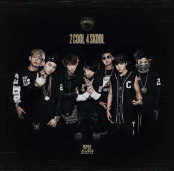
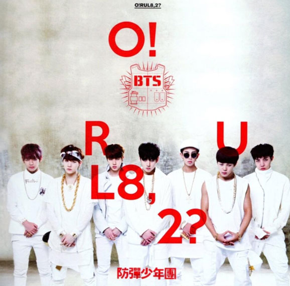
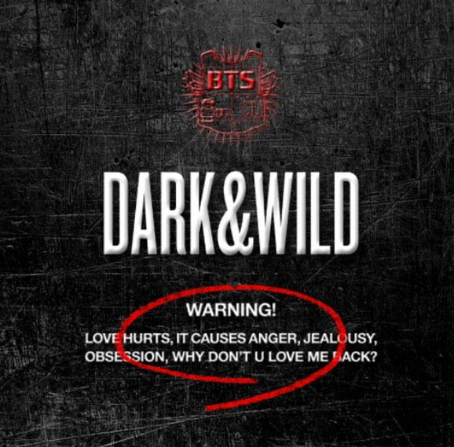
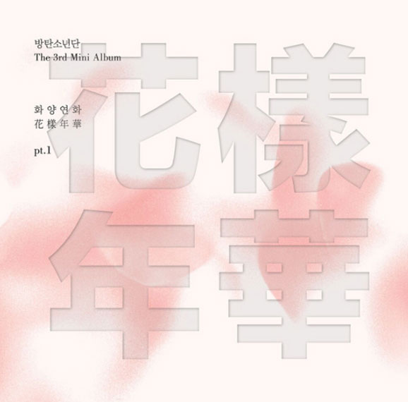
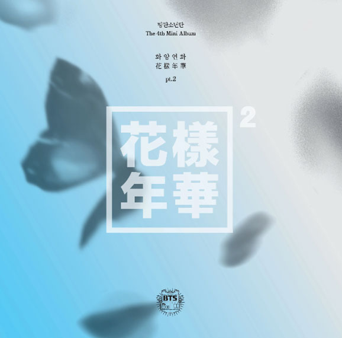
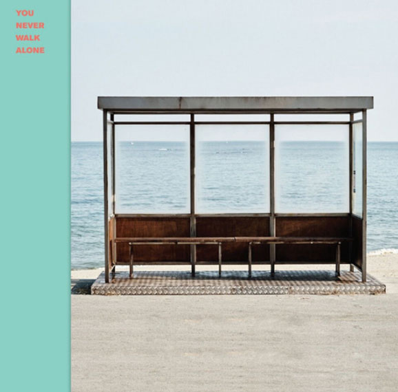
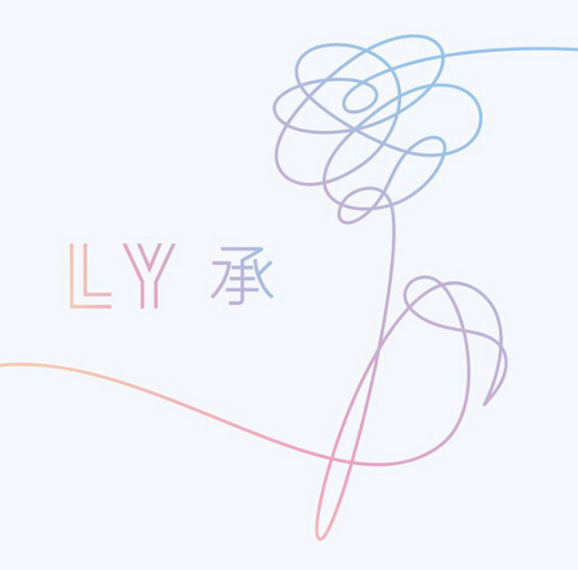
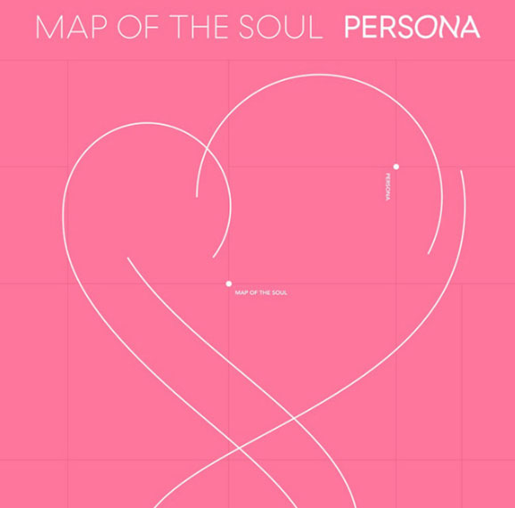
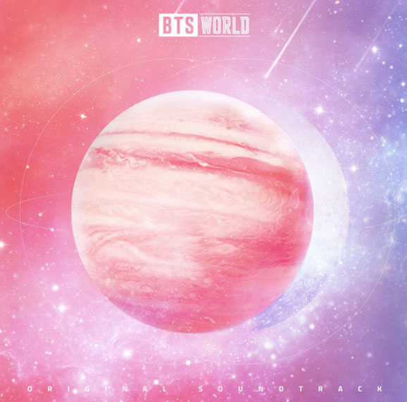
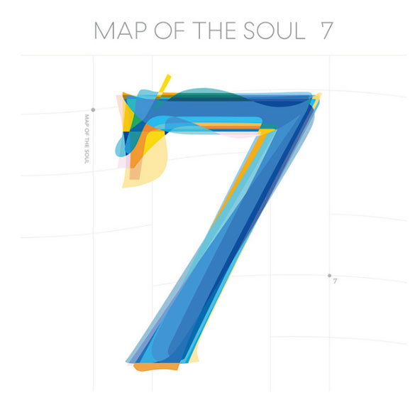
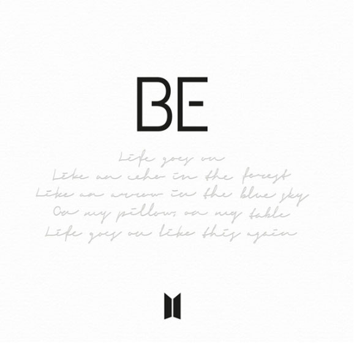
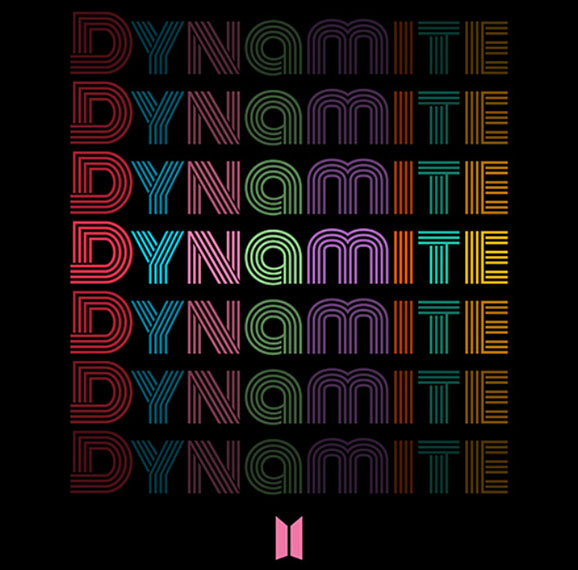
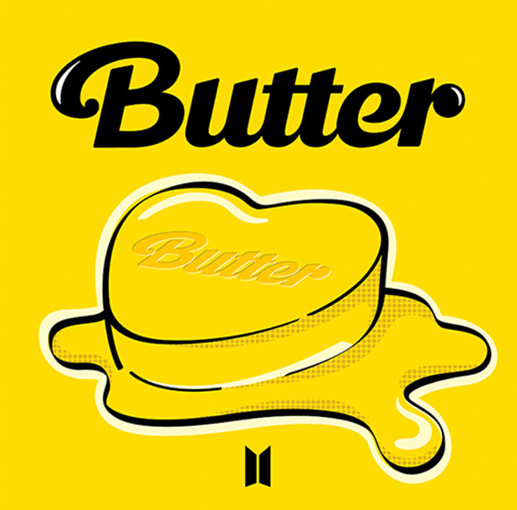
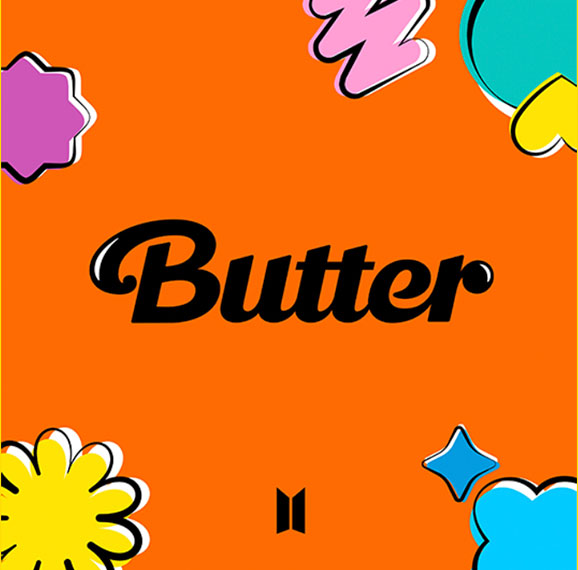
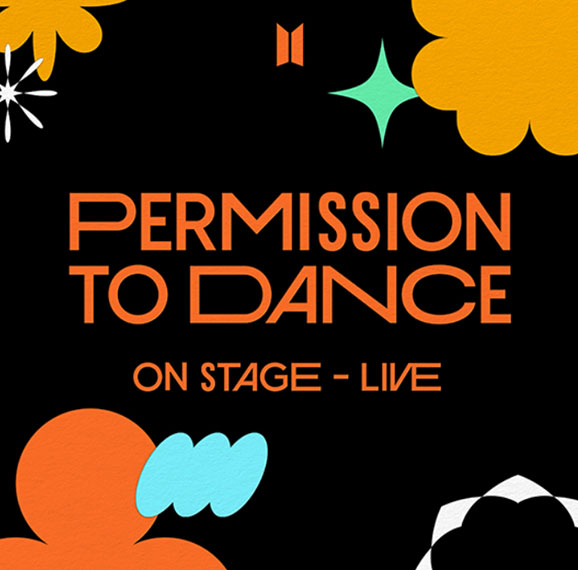
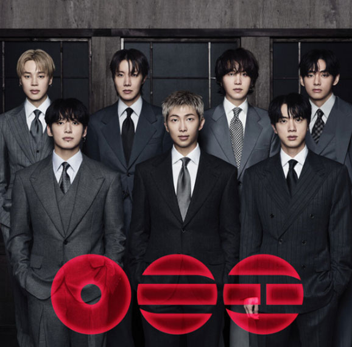
Mediante un modelo algorítmico sobre las variables de audio de Spotify, se analizaron 786 pistas del repertorio de BTS para ordenarlas según su atmósfera musical. El resultado divide su música en cuatro facetas: intenso y oscuro (el rap crítico y potente), bailable y alegre (hits de alta energía), melancólico y acústico (baladas íntimas) y spoken word (interludios narrados). Una radiografía de datos que muestra cómo el grupo transita libremente de la euforia a la introspección.
Una canción puede hacerte mover y, al mismo tiempo, hablar de pérdida. O sonar melancólica mientras sus palabras transmiten esperanza. Observamos esa tensión en BTS: cuánto se parece —o cuánto se aleja— el tono de una letra de la manera en que suena musicalmente la canción.
Para hacerlo ponemos ambas capas en la misma escala:
La distancia entre los dos es lo que llamamos brecha
No buscamos decidir qué canción es “feliz” o “triste”, ni interpretar qué quiso decir BTS buscamos algo más concreto: cuándo letra y sonido apuntan en la misma dirección y cuándo no.
¿Por qué mirar esto? Porque permite volver a escuchar canciones conocidas con otra pregunta: ¿la emoción está en las palabras, en el sonido o precisamente en la tensión entre ambos?
La música suena más luminosa que la letra, en Don’t Say You Love Me, de Jin, las dos mediciones se separan con claridad.
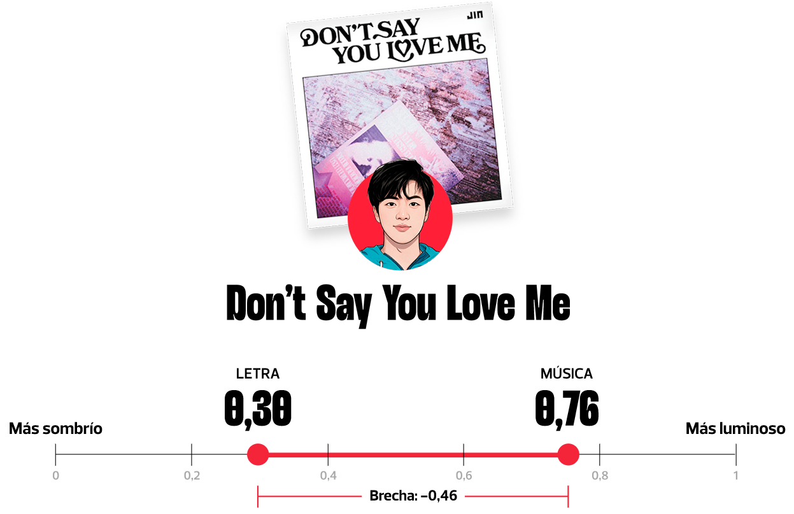
La música resulta considerablemente más luminosa que el tono detectado en su letra.
Usamos la variable valence de Spotify, que estima cuán positiva o luminosa suena musicalmente una pista en una escala de 0 a 1.
Aplicamos una clasificación semántica con el mismo procedimiento a todas las canciones del corpus para estimar su tono emocional también en una escala de 0 a 1.
Restamos la valencia musical a la textual. En este caso, 0,30 − 0,76 = −0,46. Un valor negativo indica que la música resulta más luminosa que la letra.
No. Cuando ampliamos la comparación al conjunto de canciones para las que tenemos las dos mediciones, aparece un patrón más amplio.
Brecha promedio: +0,23
n = 12 canciones
Brecha promedio: +0,04
n = 35 canciones
En este corpus, la brecha promedio se redujo alrededor de 83 %. La música y la letra aparecen mucho más alineadas en 2023–2025 que en el periodo anterior.
Un valor positivo indica que, en promedio, el tono de la letra fue clasificado como más luminoso que el sonido musical. La comparación incluye únicamente canciones para las que contamos con ambas mediciones; por eso describe este corpus y no toda la discografía de BTS.
Calculamos para cada canción la diferencia entre el tono textual y la valence musical, y después comparamos el promedio de esa brecha entre periodos. Una brecha cercana a cero indica mayor coincidencia entre ambas mediciones.
Cada punto es una canción. Busca una que conozcas y descubre si su letra y su sonido apuntan hacia el mismo tono emocional.
Hasta aquí comparamos letra y sonido. Con ARIRANG hacemos una pregunta distinta: ¿cómo cambia el tono emocional de las letras a medida que avanza el álbum?
Seguimos sus 14 canciones, en el orden del tracklist, para observar ese recorrido.
Mientras el mundo atravesaba crisis sanitarias, cambios geopolíticos y transiciones en la cultura de masas, siete jóvenes de Seúl redefinían el alcance del pop global. Esta línea de tiempo contrasta sus hitos clave con los sucesos que marcaron al planeta.
Nace la plataforma YouTube, transformando el consumo digital de video.
Bang Si-hyuk funda en Seúl la agencia discográfica Big Hit Entertainment.
El huracán Katrina inunda y devasta la ciudad de Nueva Orleans.
Beyoncé publica “Single Ladies” y domina la cultura pop internacional.
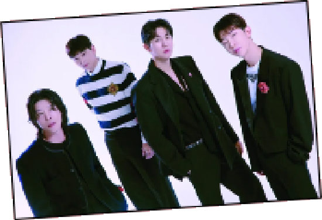
Big Hit firma alianza de gestión con JYP para coadministrar al cuarteto 2AM.
Barack Obama gana las elecciones y es electo primer presidente afroamericano de EEUU.
Se forma la boyband británica One Direction en el programa The X Factor.
Reclutamiento de RM; arranca el desarrollo del concepto original de hip-hop de Big Hit.
Un devastador terremoto de magnitud 7,0 destruye la capital de Haití.
El hit surcoreano “Gangnam Style” de PSY rompe récords históricos en YouTube.
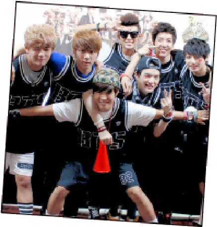
Se consolida la formación definitiva de los siete integrantes bajo un régimen intensivo de entrenamiento.
La Supertormenta Sandy azota la costa este de EE. UU. y paraliza Nueva York.
Daft Punk arrasa con “Get Lucky” en su aclamado disco Random Access Memories.
El 13 de junio debutan oficialmente en televisión con el lanzamiento del sencillo “2 Cool 4 Skool”.
Falleció el líder histórico y premio Nobel de la Paz sudafricano Nelson Mandela.
Alemania golea 7-1 a Brasil en las semifinales de la Copa Mundial de fútbol de la FIFA.
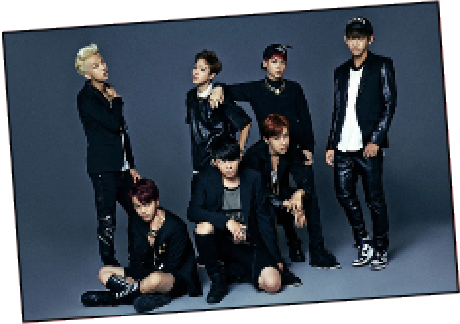
Publican “Dark & Wild”, su primer álbum de estudio, e inician la gira internacional “The Red Bullet”.
Rusia anexiona la península de Crimea tras una intervención militar.
Justin Bieber marca tendencia con el pop y dance de su álbum Purpose.
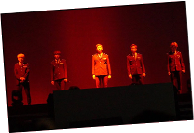
La gira “The Red Bullet” llega por primera vez a Latinoamérica (México, Chile y Brasil).
La crisis de refugiados sirios desata tensiones migratorias en Europa.
Beyoncé publica Lemonade, redefiniendo el formato de álbum visual.
El álbum “Wings” fija récord de ventas y logra histórico debut en Billboard 200 (puesto 26).
El referéndum del Brexit aprueba la salida de Reino Unido de la Unión Europea.
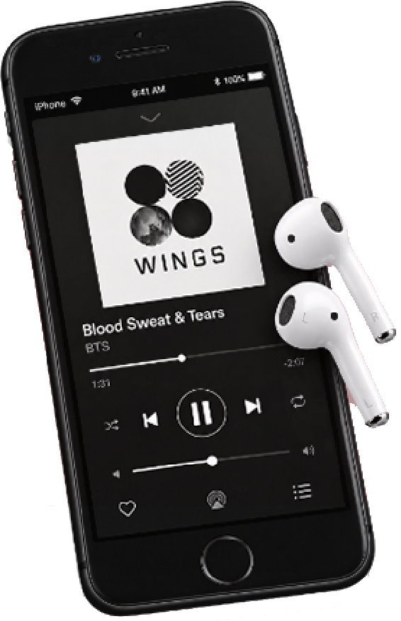
“Despacito” de Luis Fonsi y Daddy Yankee se convierte en el video más visto del año.
Ganan el premio Top Social Artist en Billboard; despega su impacto en Occidente.
Donald Trump asume formalmente la presidencia de los Estados Unidos.
Childish Gambino sacude la industria con el crudo tema “This Is America”.
Primer N°1 en Billboard 200 con “Love Yourself: Tear”; inician su primera gira mundial en estadios.
Los incendios forestales Camp Fire arrasan el pueblo de Paradise en California.
Lil Nas X rompe marcas de permanencia en listas con “Old Town Road”.
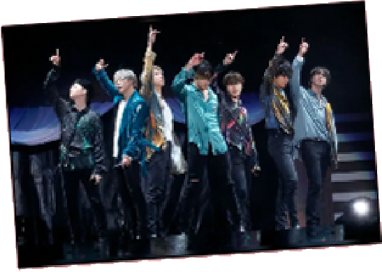
La gira de estadios “Love Yourself: Speak Yourself” bate récords de recaudación internacional.
Un voraz incendio colapsa la aguja y el techo de la catedral de Notre Dame.
Dua Lipa revitaliza la música disco con el aclamado Future Nostalgia.
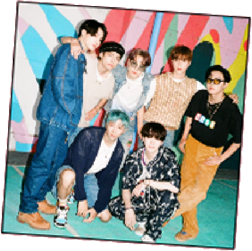
“Dynamite” es N°1 en Billboard Hot 100; Big Hit debuta en la bolsa de valores de Seúl.
La OMS declara oficialmente la emergencia sanitaria por la COVID-19.
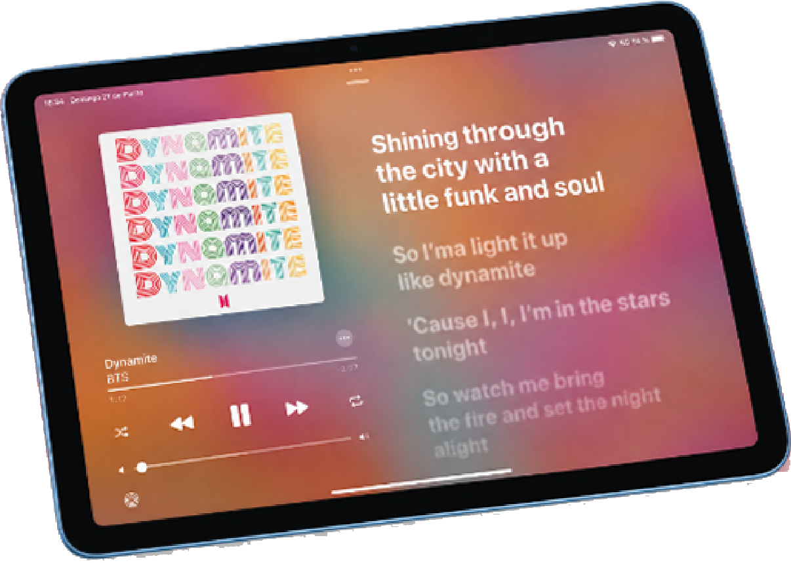
Olivia Rodrigo debuta batiendo récords globales con “Drivers License”.
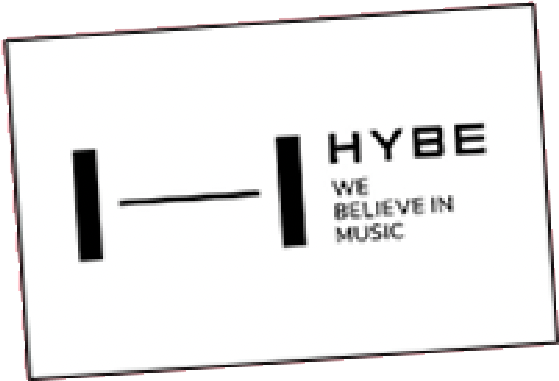
Big Hit formaliza su reestructuración y adopta el nombre corporativo HYBE.
Manifestantes asaltan la sede del Capitolio en Washington D.C.
“We Don’t Talk About Bruno” de la cinta Encanto lidera las listas musicales globales.
Inician el ‘Capítulo 2’ enfocado en proyectos solistas; Jin inicia el servicio militar obligatorio.
Falleció la reina Isabel II de Inglaterra tras siete décadas de reinado.
Taylor Swift revoluciona la economía musical con The Eras Tour.
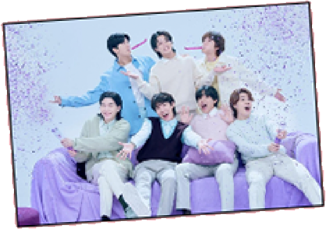
Celebran su décimo aniversario grupal mientras sus álbumes en solitario rompen récords en Billboard.
Terremotos de magnitud 7,8 devastan extensas regiones de Turquía y Siria.
Kendrick Lamar sacude la escena del rap con la disstrack “Not Like Us”.
Jin y j-hope culminan satisfactoriamente su servicio militar obligatorio y retoman actividades.
Muere Akira Toriyama, legendario mangaka y creador de Dragon Ball.
La banda británica Oasis concreta su esperada reunión tras 16 años de ruptura.
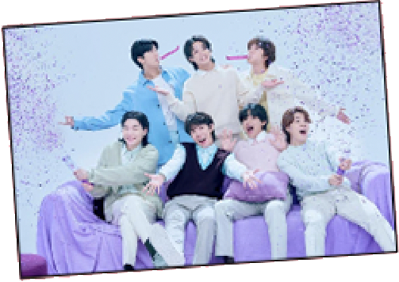
Los siete integrantes completan el servicio militar y HYBE confirma los planes de retorno como septeto.
Ola de calor e incendios forestales récord golpean el sur de Europa.
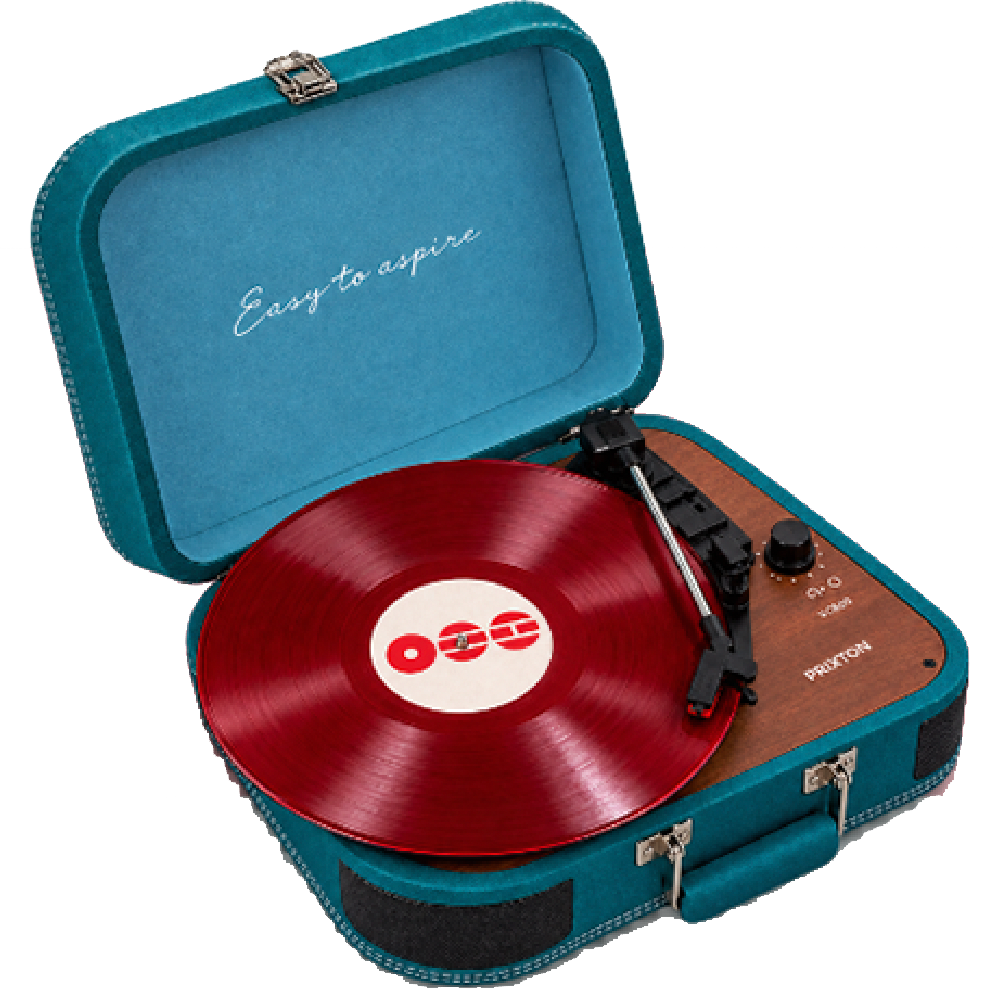
La industria musical celebra el impacto del streaming global en los grandes escenarios internacionales.
Consolidan su regreso grupal definitivo con el inicio de los preparativos para su nueva gira y álbum de estudio.
Se intensifican los programas de cooperación climática y prevención de desastres en zonas vulnerables.
Detalles de la vida de cada integrante, los roles que cada uno cumple en el grupo, sus logros, y el estilo musical que los caracteriza según…
Selecciona a un BTS
Ahí sí entra el gráfico de composición de clusters por miembro, para la ARMY que quiera mirar el panorama completo. Estos grupos se generaron a partir de características musicales, no del significado de las letras.
Compara cinco dimensiones musicales del mismo miembro entre 2013–2022 y 2023–2025.
Valence → luminosidad sonora
Energy → intensidad
Danceabillity → ritmicidad / facilidad para bailar
Acousticnes → componente acústico
Speechiness → presencia de voz hablada